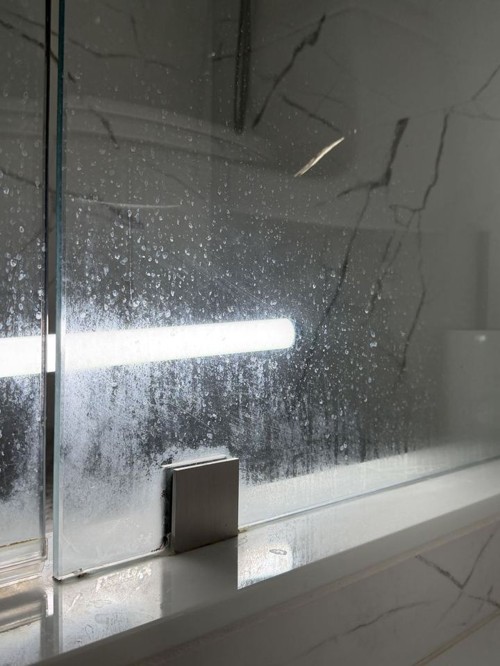
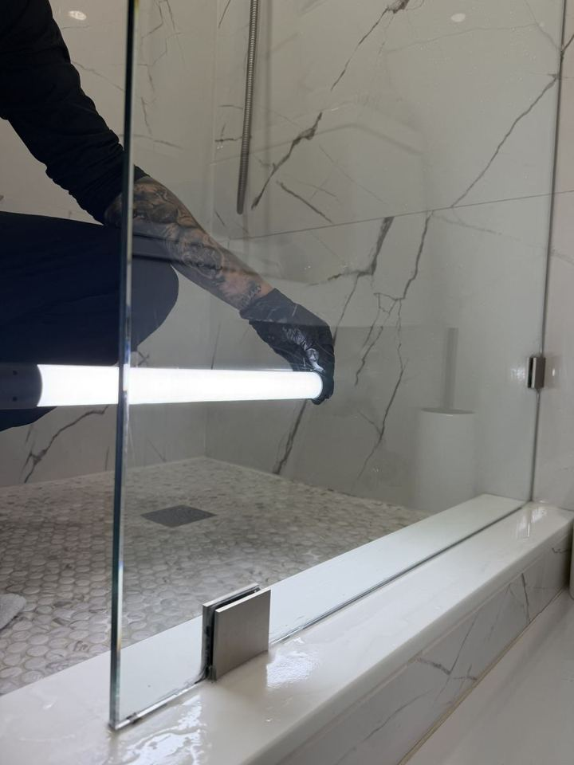
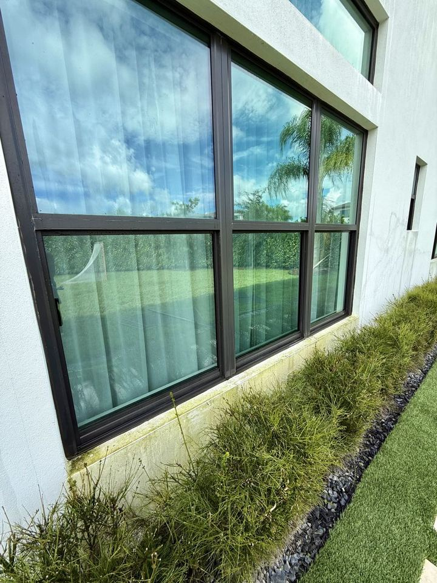
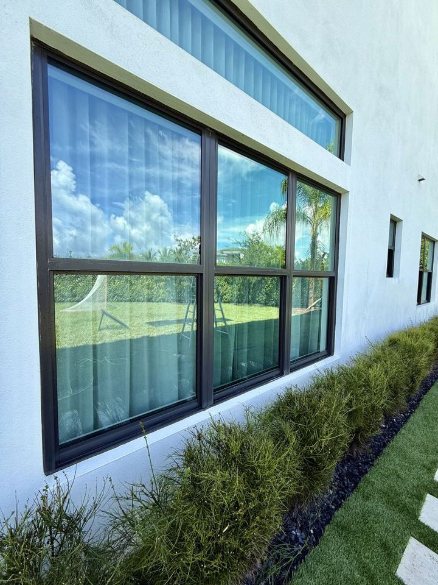

Clean glass. Clear results.
Clean surfaces do more than look good. They protect your property's appearance, create a welcoming impression, and support regular property maintenance.
Windows first. Everything around them too.
Pick what you need, or combine services in one visit. Every estimate is personalized to your property.
Clean is a schedule, not a one-time fix.
Window and exterior cleaning are most effective when treated as regular maintenance. A recurring schedule keeps your property consistently presentable instead of waiting until dirt and buildup become obvious. The right frequency depends on your location, surrounding trees and traffic, weather exposure, and your expectations.
Your estimate in about a minute.
Answer only the questions for the services you choose. Your contact details are asked once, at the end.
Homes we keep crystal clear.
A few of the properties we care for across South Florida.
See the difference.

Before
After
Before
AfterProfessional glass care across South Florida.
Don't see your city? Send us a message and we'll check availability for your area.
Broward County
Coral Springs · Fort Lauderdale · Pompano Beach · Hollywood
Palm Beach County
Boca Raton · Delray Beach · Boynton Beach · West Palm Beach
Miami-Dade County
Aventura · Miami · Sunny Isles Beach · Doral
Good questions, clear answers.
How do I get a price?
Use the estimate form above or send us a text. Answer a few quick questions about your property and we'll reply with a personalized estimate. Estimates are free.
How often should I have my windows cleaned?
It depends on your location, nearby trees and traffic, weather exposure and how spotless you like your glass. Many properties do best on a regular schedule, and we'll suggest a frequency that fits yours in your estimate.
Can all hard water stains be removed?
Most mineral buildup can be removed or greatly reduced. Stains that have been there for years can etch into the glass, and that damage can't always be fully reversed. Send us photos and we'll tell you what to expect before the visit.
Do I need to be home during the service?
Not always. For exterior work we only need safe access to the areas being cleaned. We'll confirm the details with you when we schedule.
What happens if it rains on my service day?
If the weather isn't safe or right for the job, we'll reach out and reschedule with you.
Which areas do you serve?
Broward County is our main area, and we also serve Palm Beach and Miami-Dade counties. If you don't see your city, send us a message and we'll check.
Ready for a clearer view?
Contact GlassMaster Cleaning to discuss your property, the surfaces you want cleaned, and how often you would like service.